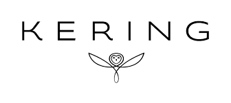
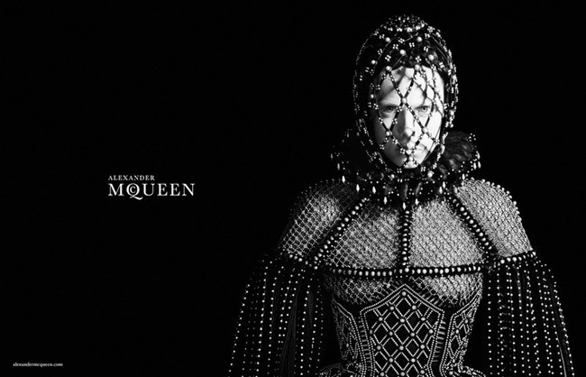
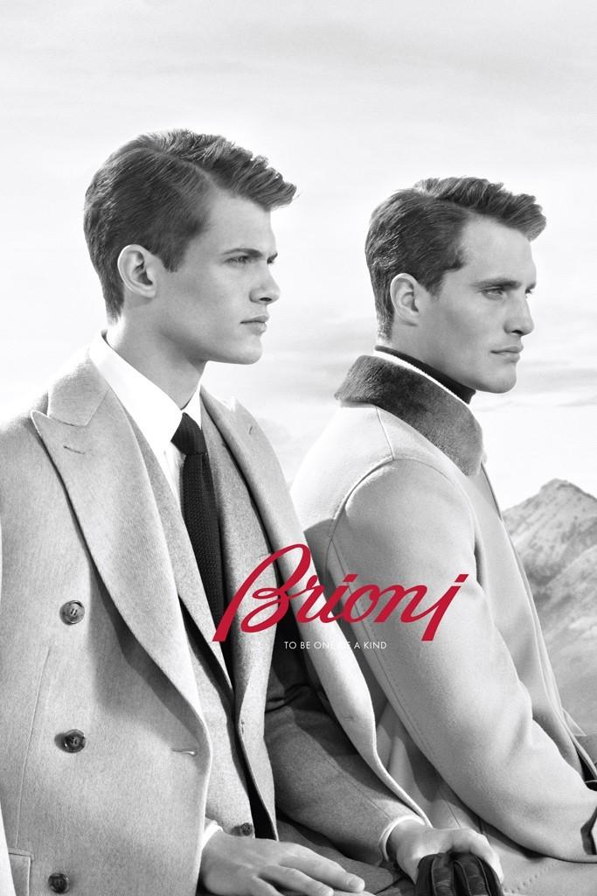
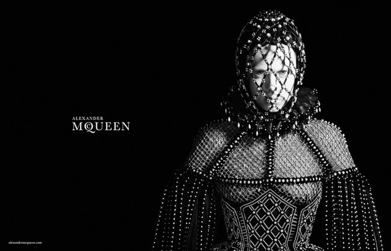
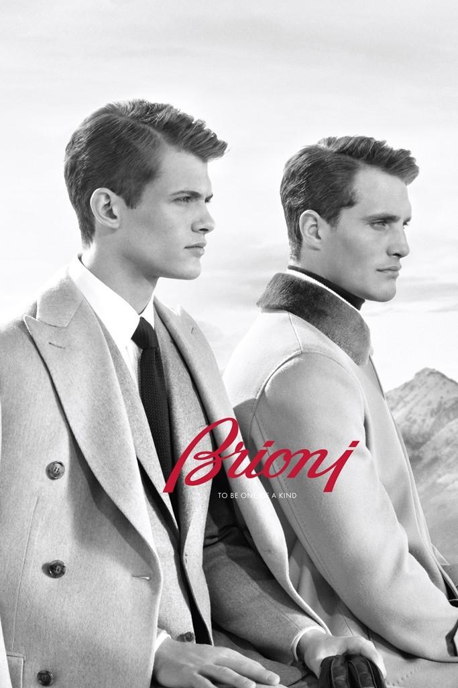

Grupo Kering
Quienes somos
Kering es un grupo de empresas comerciales francesas creadas por el empresario y millonario François Pinault. El grupo PPR desarrolla la comercialización de un conjunto de marcas mundiales, marcas para el gran público y marcas de lujo, que son distribuidas por 120 países.
En Kering, la creatividad, la audacia y la diversidad alimentan el éxito de sus casas e impulsan su visión de lujo sostenible e influyente. Al colocar la creatividad en el centro de su estrategia, permite que sus casas establezcan nuevos límites en términos de su expresión creativa mientras elaboran el lujo del mañana de manera sostenible y responsable.
Sus casas de lujo
Las Casas emblemáticas de Kering, cada una fuerte por derecho propio, se destacan más altas, más audaces, más audaces juntas, lo que convierte al Grupo en un líder en lujo.
 




Gucci , Saint Laurent , Bottega Veneta , Balenciaga , Alexander McQueen , Brioni , Boucheron , Pomellato , DoDo y Qeelin impulsan continuamente los códigos creativos y superan los estándares de excelencia. Desde los reinos de la alta costura, la joyería y los accesorios, nuestras Casas están unidas en torno a una visión audaz: forjar el grupo de lujo más influyente, creativo, innovador y sostenible del mundo.
Sustentabilidad
Creando el lujo del mañana
El lujo y la sostenibilidad son lo mismo”. Como reflejo de esta convicción profundamente arraigada de François-Henri Pinault, la sostenibilidad está en el centro de la estrategia de Kering tanto como en su visión creativa y moderna del lujo. Del mismo modo, es una necesidad ética y un motor de innovación y creación de valor para el Grupo, sus Casas y sus grupos de interés.